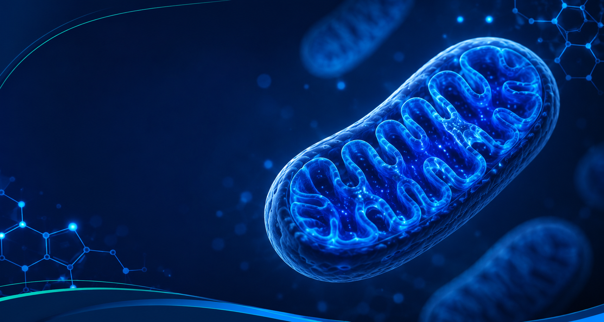
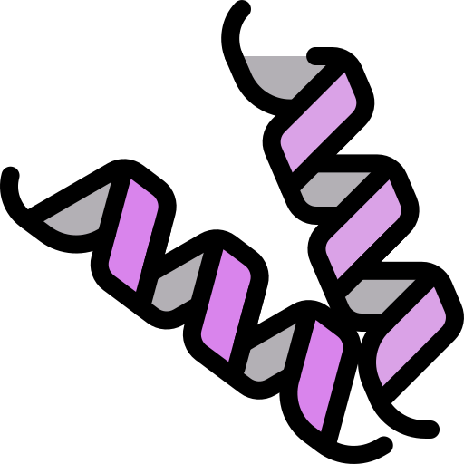
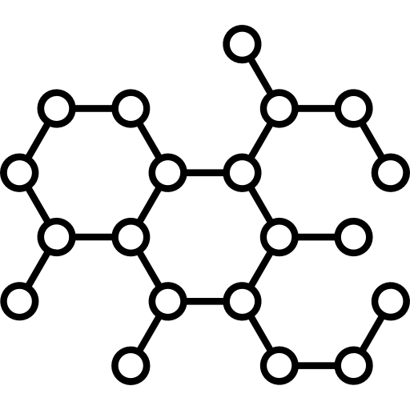
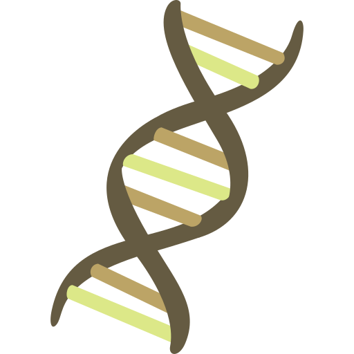
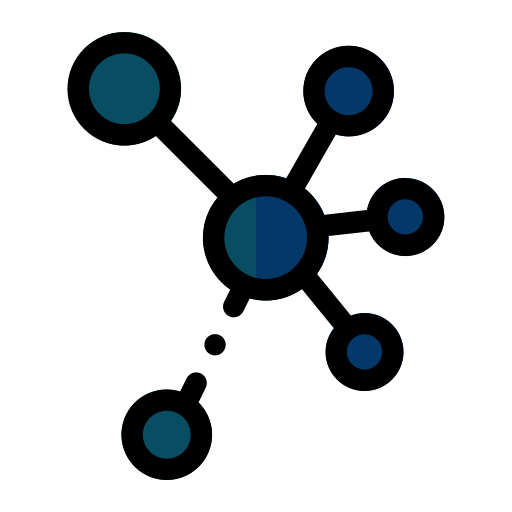

BIOQUÍMICA
A química da vida
BIOQUÍMICA
A química da vida

As moléculas que formam a vida
As biomoléculas são compostos químicos presentes em todos os seres vivos e desempenham funções essenciais para a estrutura, o metabolismo, o crescimento e a manutenção da vida.
O QUE SÃO BIOMOLÉCULAS?
As biomoléculas são substâncias produzidas pelos seres vivos e constituídas principalmente por carbono, hidrogênio, oxigênio, nitrogênio, fósforo e enxofre. Elas participam de praticamente todos os processos biológicos, desde a obtenção de energia até o armazenamento das informações genéticas.
Essas moléculas trabalham em conjunto para garantir o crescimento, a reprodução, o metabolismo e a sobrevivência dos organismos, sendo indispensáveis para a manutenção da vida.

As proteínas são moléculas formadas por aminoácidos e desempenham funções estruturais, enzimáticas, hormonais e de defesa. Elas participam da construção dos tecidos e da maioria das reações químicas do organismo.

Os carboidratos são a principal fonte de energia para os seres vivos. Estão presentes em alimentos como arroz, pão, massas, frutas e cereais, sendo fundamentais para o funcionamento das células.

Os lipídios são moléculas insolúveis em água que atuam como reserva energética e fazem parte da composição das membranas celulares. Também participam da produção de hormônios e do isolamento térmico.


Os ácidos nucleicos, representados pelo DNA e pelo RNA, armazenam e transmitem as informações genéticas responsáveis pelo desenvolvimento, funcionamento e reprodução dos seres vivos.
Você sabia?
Mesmo desempenhando funções diferentes, proteínas, carboidratos, lipídios e ácidos nucleicos atuam de forma integrada para manter o equilíbrio e o funcionamento adequado dos organismos vivos.
DNA, ENZIMAS E ENERGIA
DNA: a molécula de DNA é formada por nucleotídeos que contêm o açúcar desoxirribose (no RNA, o açúcar é a ribose). A informação genética é escrita por quatro bases nitrogenadas: adenina, guanina, citosina e timina. No RNA, a timina é substituída pela uracila.
Enzimas: são proteínas que atuam como catalisadores biológicos. Elas aceleram as reações químicas do organismo sem serem consumidas no processo, podendo ser usadas várias vezes.
Respiração celular: é o processo pelo qual as células produzem energia a partir dos nutrientes, como a glicose, principalmente com a participação do oxigênio.
ATP: sigla de adenosina trifosfato, a molécula que armazena e fornece a energia liberada na respiração celular para as atividades da célula, como movimento, transporte e síntese de substâncias.